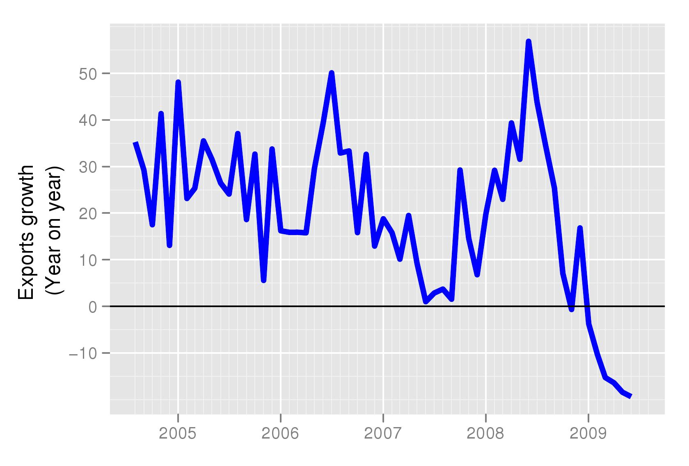
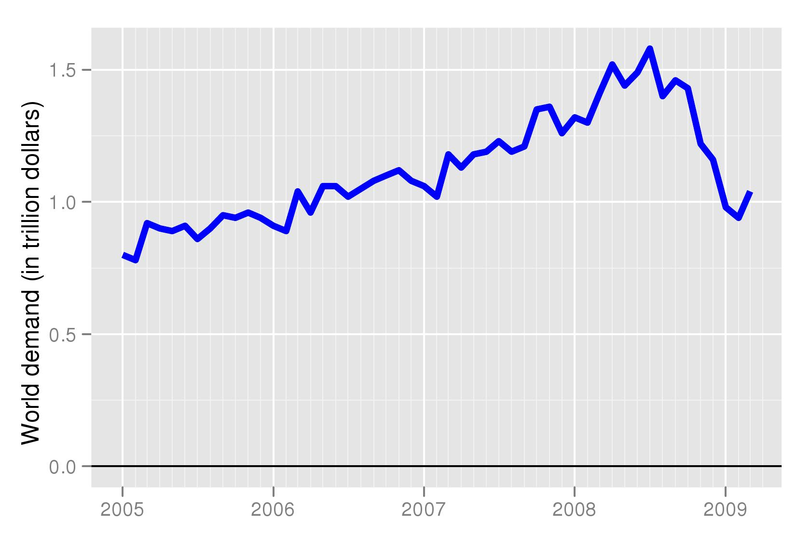

The good news on exports you did not know
By Ila Patnaik and Giovanni Veronese*
Financial Express, 6 August 2009
Earlier this week the Government released exports data. As usual, the official press release emphasised the year-on-year growth rates. This measure gave a wrong signal. It compared exports from India in the month of June 2009 to those in June 2008. i.e., before world demand was hit by the global crisis. Not surprisingly, exports in June were lower than they were in the happier days of last June.
The more interesting question today is: how do exports today compare to the last few months after the crisis? What do the most recent trends say? Have exports improved or worsened in June? Is the April-June quarter looking better than the January-March quarter? We find that when we look at the most recent behaviour of exports, there is some good news. Exports have grown faster not just in June, but in the whole of the first quarter of this financial year.
 For examining the most recent behaviour of an economic series we need to look at the month-on-month or quarter-on-quarter growth rates. Such growth rates would be able to tell us whether June was better than May or whether the first quarter of 2009-10 performed better than the last quarter of 2008-09. However, like many other economic series, exports also have seasonality. We, therefore, adjust the monthly data for seasonality before looking the month-on-month growth rate. We find that the annualised growth rate of seasonally adjusted growth rate observed in June (Figure 1) is very different from year-on-year growth rates(Figure 2). The analysis shows that given the sharp collapse in global demand recorded in the end of 2008 and its recent recovery (Figure 3), comparing todays exports to one year ago is misleading: not only does it fails to understand the fact that exports stopped falling, it also misses out the sizeable pickup which occurred in the month of June.
For examining the most recent behaviour of an economic series we need to look at the month-on-month or quarter-on-quarter growth rates. Such growth rates would be able to tell us whether June was better than May or whether the first quarter of 2009-10 performed better than the last quarter of 2008-09. However, like many other economic series, exports also have seasonality. We, therefore, adjust the monthly data for seasonality before looking the month-on-month growth rate. We find that the annualised growth rate of seasonally adjusted growth rate observed in June (Figure 1) is very different from year-on-year growth rates(Figure 2). The analysis shows that given the sharp collapse in global demand recorded in the end of 2008 and its recent recovery (Figure 3), comparing todays exports to one year ago is misleading: not only does it fails to understand the fact that exports stopped falling, it also misses out the sizeable pickup which occurred in the month of June.
 However, one observation does not make a trend. Figure 1, therefore, reports the three months growth rate of seasonally adjusted exports. Despite some volatility, the acceleration in exports is evident since March, with the June figure pointing to an increase at an annual rate of 36% (Data). This trend is not at odds with the recovery pattern observed in world demand. The external environment for Indian exporters appears to have improved.
* Seasonally adjusted data and growth rates for important macroeconomic variables are being calculated under the aegis of the NIPFP-DEA program at the National Institute of Public Finance and Policy and data is available for free downloading: Seasonally adjusted data
Back up to Ila Patnaik's media page
Back up to Ila Patnaik's home page